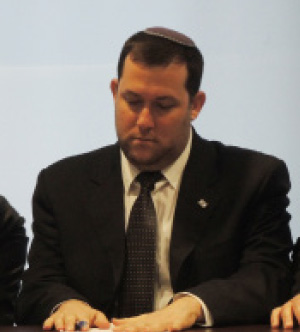

The World Only Understands the Tanach
Mr. Yossi Dagan, deputy chairman of the Shomron Regional Council, has been behind the modern industrial projects that have transformed the settlers’ public relations activities into a professionally well-oiled machine. In an exclusive “Beis Moshiach” interview, he discusses the way we can explain to the European Parliament why we have settled in Elon Moreh and how it is not “occupation”, what are the true facts regarding the population growth in the Shomron, and what the Israeli public opinion makers had to say after they visited the region for the first time in their lives. He had never heard about any international boycott of Yehuda and Shomron, which he classifies as one big joke. Dagan is unconcerned about another expulsion; on the contrary, he is certain that we have reached a “point of no return.” Therefore, the whole concept of a “Palestinian” state has evaporated, and there is now only one option: a sovereign Jewish state from the Jordan River to the Mediterranean Sea.

Translated by Michoel Leib Dobry
While Prime Minister Netanyahu and his Minister of Justice continue along the diplomatic track, based upon the Obama Administration’s demands for a return to the 1967 borders with minor alterations, and the establishment of a PLO state with East Jerusalem as its capital, there are those who remain undeterred by the media headlines. They are constantly active; not just according to the old approach of “another dunam, another goat,” but also among Jews who come to the Shomron to get a direct and up-close look at the settlements in the land of the Tanach, the historical birthplace of the Jewish People. While most Israelis had previously learned about Yehuda and Shomron primarily from media reports, the situation today is quite different. There have already been more than three thousand guided bus tours of the Shomron – that’s about 150,000 people.
However, even the media has not been neglected, and today the average Israeli getting his information on Yehuda and Shomron from state media will now hear about flourishing communities and thriving agriculture. During the last five years, more than two thousand Israeli journalists and public opinion builders have toured the Shomron, thereby altering the media’s previous tendencies to refer to the region from a highly negative perspective. Recent visitors to the Shomron have also included members of the European Parliament and the United States Congress.
One man stands behind this revolution: Yossi Dagan, deputy chairman of the Shomron Regional Council, who was driven out of his home in the northern Shomron settlement of Sa-Nur eight years ago and promised to do everything possible that this would never happen again.
On the one hand, the media speaks about a return to the 1967 borders; while on the other hand, you speak about growth and expansion in the settlements of Yehuda and Shomron.
The most significant fact before the Shomron Regional Council is the blessed level of growth we encounter each year. Despite all the obstacles and challenges we presently face, the Shomron Regional Council has now recorded its third year with the highest rate of growth throughout Eretz Yisroel. While the national average for growth stood at 1.2% with even some places showing an actual decrease in population, the average in Yehuda and Shomron showed an eight percent increase! Regarding this phenomenon, it is stated in Parshas Shmos: “But as much as they would afflict them, so did they multiply and so did they gain strength.” On the one hand, we are waging a battle over every house, every school, and every kindergarten we open. On the other hand, the facts on the region’s growth and prosperity prove the mysterious help from Heaven we have been experiencing here. Despite all the battles against the High Court of Justice and the regional community administration over every caravan, we are winning the fight.
How do you explain the fact that the whole world busies itself with a caravan being erected on some remote hill in the Shomron?
There’s a saying from Rabbi Yaakov Moshe Charlap, of righteous memory, that every generation has a certain issue that irritates the nations of the world, thereby demonstrating its great importance to that generation. The Gentile nations once cried out against bris mila, later against the study of Torah, and today they complain against Jews living in Eretz Yisroel. There is no other rational explanation for the fact that world leaders can call the Prime Minister to inquire about a few new residential units being built on some hill…
Yet, it is under these very conditions that the Shomron continues to grow. The Shomron Regional Council is only one of twenty-three local authorities in the region; there are numerous yishuvim classified as local councils. Two years ago, we opened three schools and twenty kindergartens. This year, we opened another school, and next year we are preparing to open four more schools and another twenty kindergartens! I am also in charge of the council’s education department, and there is no place in Eretz Yisroel that has had such an increase in its number of students. This represents a tremendous Kiddush Hashem and an eternal response to those forces seeking to harm our settlement in Eretz Yisroel.
What is the cause of this most unnatural growth?
Quite simply, we see the Hand of G-d at work here. Before all the rational explanations, it’s important to state that there is no logical reason that we are sitting in Eretz Yisroel surrounded by two hundred million Arabs, yet Eretz Yisroel has become an island of stability amidst the ‘Arab spring’ revolutions engulfing the Moslem world. Furthermore, we are still exporting merchandise throughout the globe, and people come from all over the world to see the economic giant created here. Divine Providence in the Shomron is quite manifest, and this is exactly what is happening. We have simply been privileged to do as G-d has commanded us, and He has given us His help in return. We have an historic right to settle in this strip of land, the foundation of the Jewish People. This is the home of our forefathers, the place where virtually all the stories of the Tanach transpired – from Avraham Avinu to Eliyahu HaNavi. We have merited to see G-d’s Divine Hand, literally every hour of every day, even in the most (seemingly) insignificant detail – direct help from the Alm-ghty.
Moreover, anyone with eyes in his head understands that we don’t have any ‘Arab spring’ as they do in all the Arab nations; this is in the merit of our settlements and troops in Yehuda and Shomron. I’ve had the opportunity to meet frequently with European Parliament members, and they are simply amazed when they learn about the Shomron’s geographical location. I was with council head Gershon Mesika on Capitol Hill in Washington, where we met with twenty-five members of the Senate and the House of Representatives. We showed them the map of Eretz Yisroel, with only seventy kilometers separating between the Jordan River and the Mediterranean Sea – fifty-five kilometers sprawled over the hills of Shomron and only fifteen kilometers (nine miles) within the Green Line in view of those hills. They found these facts impossible to believe. One Congressman wanted to throw me out of his office in the middle of our meeting… “I don’t believe it,” he said. “The whole Green Line is like a street in Green City.”
Without the Shomron, we’re left with ‘the narrow waist’ of Eretz Yisroel, and the leftists expect us to take this narrow strip – only fifteen kilometers wide – and maintain a sovereign state. Anyone who looks at the map can understand that it’s simply preposterous to establish a Hamas/Al Qaeda terror state, similar to what exists in Gaza, on the hills of the Shomron commanding the coastal plane. Therefore, the only reason that we currently enjoy stability in the region, without Al Qaeda militia men roaming the countryside, is our presence in Yehuda and Shomron.
In addition, I explain to these foreign parliamentarians that we don’t live in the Shomron merely to protect Tel Aviv, rather because this is our land. All events pertaining to the foundation of the Jewish People took place here: the journeys of Avraham Avinu, ‘And Avraham passed through the land as far as Elon Moreh’, the entry into Eretz Yisroel through Sh’chem, the place of the covenant between G-d and the Jewish People, the blessing and the curse at Mt. Eival and Mt. Grizim. Our entire basis as a nation is found in the Shomron. We see how G-d’s Divine Hand designed the topography of Eretz Yisroel, as the Shomron occupies a vital place that dominates the entire valley.
THE SHOMRON: A WONDERFUL PLACE TO VISIT
In recent years, you have also established a massive project of organized tours in the Shomron. What is behind this project?
After the expulsion from Gush Katif, I reached the conclusion that the greatest enemy to the settlement movement is ignorance. The expulsion’s harm to the settlements came from people who have no true knowledge of this vital region. Take for example the absurdity in withdrawing from the northern Shomron: While the Israel Defense Forces did uproot the Jewish settlements there, it has remained in the region. This is because the IDF simply must maintain control over this area as a means of protecting the center of Eretz Yisroel. Today, this territory is classified as Area C, and it is under complete military control. This is the best possible proof that the IDF’s security operations cannot be conducted effectively without our presence in Yehuda and Shomron. However, the Israeli public knows nothing about this. People thought that this was merely the evacuation of four ‘isolated’ yishuvim, as the media called them. No one had any idea where the northern Shomron was situated.
As a result, I came to the conclusion that we must eliminate this ignorance. Over the past five years, we have initiated a high-level project for bringing all of the country’s public opinion builders to the Shomron, giving them an opportunity to become acquainted with the region, perhaps for the very first time. I can tell you that today, five years later, numerous people from the ultra-Orthodox sector have come to me seeking advice on how to a set a similar project in motion for the public at-large to acquire greater knowledge about the chareidi community. Our project’s success exceeded all expectations and has spread throughout all of Yehuda and Shomron. As part of this guided tour program, we have already conducted more than nine hundred visits to the Shomron for more than two thousand media figures, newspaper photographers and news editors, sixty Knesset Members from across the political spectrum, government ministers, and shapers of public opinion in Eretz Yisroel.
For example, after participating in one of our guided tours, media personality Avri Gilad claimed that it had been a revolution of awareness for him. “For thirty years, they educated me to hate them,” he said. Yet, the tour had convinced him to change his entire perception of the settlers. While he hasn’t turned into one of our supporters, today he speaks about the settlers with an entirely different tone. Another journalist, Menachem Ben, a prominent op-ed contributor and author of two weekly newspaper columns in the Maariv daily, was so captivated by the Shomron, he eventually moved to the Shomron settlement of Nofim. There is also a growing phenomenon among left-wing journalists who come to tour the region and then reject any thought of uprooting the settlements, as they see for themselves the total unfeasibility of this option. While they don’t necessarily think that it’s a great mitzvah to live in the Shomron, they do acknowledge that Jewish presence in the region represents a ‘point of no return.’
There was a well-known news anchorman who announced after a visit to the Shomron that he no longer embraced the idea of an independent Palestinian state. Amos Harel, military correspondent for the HaAretz daily, wrote after touring the region that the Kerry initiative had come too late to do anything… After a similar visit, journalist Shalom Yerushalmi wrote that the settlers have won. Even Arnon Lapid, a leading ideologue with the kibbutz newspaper, wrote that he too had given up on the Palestinian state option after visiting the Shomron.
In my estimation, this realization is no less important than declaring our right to live in Eretz Yisroel, in order for the Israeli public to understand the impossibility of expelling the 400,000 settlers living in Yehuda and Shomron. (By the way, this figure does not include the residents of the Golan Heights and those neighborhoods of Yerushalayim situated beyond the Green Line.) When we started this tour project, we would tell the journalists to come at nine in the morning. At half past seven, we would get a call from them that they’re already waiting at the pre-arranged meeting place. It turned out that they were certain that they would need at least two hours to reach the Shomron from Tel Aviv. It never dawned on them that within half an hour, they would already be deep inside the Shomron…
During these visits, people see the agriculture, the flourishing settlements, and the social activity in the Shomron. Then, when they arrive in Elon Moreh, Benny Katzover suddenly opens up a Tanach and shows them Mt. Eival, Mt. Grizim, and the entire Jewish history that occurred in the Shomron. These tours bring such people closer not just to the Shomron, but to Judaism itself. Regrettably, today’s average graduate from Israel’s state-run educational system doesn’t know what we are doing here – not in Tel Aviv, not to mention the Shomron. We explain to them for the first time about the history of the Jewish People in the land of the Tanach.
Therefore, you decided to bring the Jewish People to the Shomron.
After we saw the great success created by the tours, we said to ourselves: Why don’t we bring the People of Israel here? We then decided to start doing just that. To this day, three thousand buses have already come, a sizable portion of which brought people from the secular community, the ultra-Orthodox sector, and also from the national religious communities located in larger cities. They met the settlers, got a good look at the settlements for the first time, and they were truly astounded. They discovered a vibrant land that appears totally different from what is described in the media. On this point, I have to give special mention to those Chabad Chassidim who have taken an energetic role in this project, including activities coordinator Rabbi Motty Markowitz for bringing busloads of Chassidim to the region. All such visits connect the Jewish People to the Shomron and also strengthen the settlers.
THE SHOMRON’S FOREIGN MINISTRY – IN EUROPE
However, you, Dagan, don’t just deal with the citizens of Eretz Yisroel; you work with the Europeans as well. Anyone observing from the sidelines can see that your activities – together with the head of the Shomron Regional Council – are beyond all logic. They have managed to enlist members of the European Parliament into the battle for the settlements, and today twenty MPs are working with them against the extreme left’s boycott of Yehuda and Shomron.
After we started hosting Israeli citizens in the Shomron, we reached an understanding that the same ignorance regarding the Shomron that exists in Tel Aviv exists in Geneva as well. These extreme left-wing organizations causing incitement in Eretz Yisroel against the Shomron are inciting the world against Tel Aviv. Most of our problems are due to these extreme left-wing forces that create incitement in the world against Eretz Yisroel. To combat this, we have established a foreign contacts unit, a kind of mini-foreign ministry, in an effort to bring the story of the Jewish People to the world. We have already hosted in the Shomron more than eighty parliamentarians from all over Europe, ten Members of the United States Congress, and one hundred and thirty foreign correspondents. I can safely say that we have encountered the same degree of ignorance we find among average Israelis. They too have never been presented with objective facts, and they were stunned by what they saw.
When a Congressman sees the international airport from a hill in the Shomron, and he considers the fact that he’ll be taking off from there in just a couple of days, he doesn’t want Al Qaeda and Hamas to control the hill where he’s standing… While standing on a hilltop in Itamar, people suddenly see jets taking off and they realize how close the Shomron is to the soft underbelly of Eretz Yisroel. They see Amman and the eastern side of the Jordan River to their left, and the Mediterranean Sea to their right – and they understand that it’s impossible to maintain security for Eretz Yisroel’s main cities without our presence in Yehuda and Shomron.
Another point that is no less important is the failure of the government of Israel to speak about our G-d-given right to Eretz Yisroel. These Senators, Congressmen, and European MPs don’t hear that this land belongs to us. However, we have the best proof of ownership – the Tanach. Most of the world believes in the Tanach, and even those who don’t accept it as Divine do accept it as an important document in the annals of human history. However, while the Arabs keep talking about an ‘occupation’, official Israeli government spokesmen try and explain to the world that we are in Eretz Yisroel because we are a hi-tech superpower that invented the drip irrigation system… The average person in Europe has heard for twenty years – ever since the Oslo Accords – that Israel is occupying Arab territory. Therefore, he is convinced that we have to leave the region, regardless of whether we are justified from a security standpoint… Even after we explain the security arguments to him, the average European will reply, “Fine, but since you’re in territory that you took from others, you have no reason to be there.” Thus, we face the absurdity that although we are constantly withdrawing, the world continues to be more and more against us. They don’t care how much land we have evacuated. From their standpoint, if this is occupied territory, we have to clear out entirely and not remain there at all.
I was sitting recently with a member of the European Parliament, and when he heard that the West Bank is actually Yehuda and Shomron, he was immediately with us! While he knew the Tanach and he had learned about the Jewish history of Yehuda and Shomron, he didn’t understand that when people said to him the West Bank, they were actually referring to Yehuda and Shomron. As soon as he heard the names Shilo, Beit E-l, and Maarat HaMachpeila, he immediately replied, ‘These are yours – that’s not an occupation!’ Even someone who doesn’t believe in the Tanach can nonetheless come to realize that we are not ‘occupiers,’ understanding the rationale behind our presence in Eretz Yisroel. However, as long as the official government of Israel wants to display its modern and contemporary side by showing its embarrassment of the Tanach, we have no chance. While the average person, foreigner or native-born, will listen most attentively to their arguments, in the end he’ll simply say, “But it’s their land.”
Today, most commentators have never been to Yehuda and Shomron, and therefore, they don’t know how to explain the map of Eretz Yisroel to the world at-large. When I visit Congressmen and show them a map of the Shomron, I find that they have never seen it before. This is usually the first time that they meet official representatives of Eretz Yisroel who speak with them about our inherent rights to the Holy Land.
Nevertheless, despite everything you have said, there is currently a boycott on products from Yehuda and Shomron, and a threat of a boycott on all of Eretz Yisroel.
The entire boycott issue is one big joke. This whole story about a so-called boycott is merely a fabrication of the left-wing. The Barkan Industrial Park alone produces $300,000,000 in world exports a year! There are currently twenty-three factories waiting in line to enter the premises, and we have no way to make room for them! You call that a boycott?
Apart from that, the boycott issue reveals the hypocrisy of the political left at its very worst. For example, the Barkan Industrial Park, one of four industrial zones in the Shomron, has the greatest level of co-existence anywhere in the Middle East. Among its one hundred and forty factories, there are three thousand Jewish workers of Israeli citizenship and, l’havdil, there are three thousand Arab workers living within the territory of the Palestinian Authority. They receive the same conditions and salaries as those working within the Green Line in accordance with Israeli law. Now, these extreme leftist organizations come along, supposedly out of a concern for these poor unfortunate Arabs making a decent living in Barkan, and try to undermine the very source of their livelihood.
I once had a debate with a representative from one of these left-wing organizations on the boycott issue: “What will happen to the laid-off Jewish workers if you succeed in closing the Barkan Industrial Park?” I asked. “They’ll be sent to professional training courses, receive unemployment insurance, and eventually find work,” he replied. However, the Arabs who will be fired as a result are unable to find work so easily. Subsequently, they are thrown out into the street, to a life of crime and terrorism. They hate the settlements so much that they are prepared to cause unwarranted hardships to the Arab sector. The main thing is their desire to crush the settlers.
When we bring the world’s parliamentarians to visit the Barkan Industrial Park, they are extremely impressed. We show them factories such as ‘Shamir Salads,’ ‘Achva Halvah,’ and ‘Lipski Installation and Sanitation,’ one of the leading companies in Eretz Yisroel in the field of plastic sanitary and plumbing products. They meet the Arab employees, speak with them, and hear about their excellent working conditions. As they leave, they always shake hands with us with great enthusiasm, expressing their genuine surprise by the aura of co-existence. I proceed to tell them that these are the factories upon which the extreme leftist forces are trying to impose a worldwide boycott.
The guests are stunned and incredulous. None of them believes that these are actually the factories they want to boycott. ‘How did they deceive us?’ they ask me. I then explain to them that all this is happening with their money, as hundreds of millions of euros are poured into the left-wing’s ‘peace industry’ against Jewish settlements in Yehuda and Shomron. Today, there is a whole industry of people making a living through their activities against us – and the ultra-Orthodox sector – with European funds. Yet, when their parliamentarians come here, they realize they have been misled. ‘This is a marvelous industry of co-existence,’ they tell me. ‘Who could ask for more than that?’
Today, there are already twenty European parliamentarians working together with us against European funding of left-wing organizations, once they realized that the leftists are merely creating provocations and greater distance between Eretz Yisroel and the European Union.
What is your message for the ultra-Orthodox communities?
I think that we and the ultra-Orthodox represent two persecuted sectors in Israeli society, and therefore, we must work together with greater cooperation. I constantly strive to connect with the ultra-Orthodox community and help many of its members, whom I won’t mention by name for various reasons… Those left-wing organizations working against the settlements in Yehuda and Shomron, with European funds, are the same organizations working against the ultra-Orthodox. Therefore, we have much in common and we must work jointly for our shared objectives on behalf of the People and the Land of Israel.
Sholom Ber Crombie. "The World Only Understands the Tanach." Beis Moshiach, no. 921 (March 25, 2014).